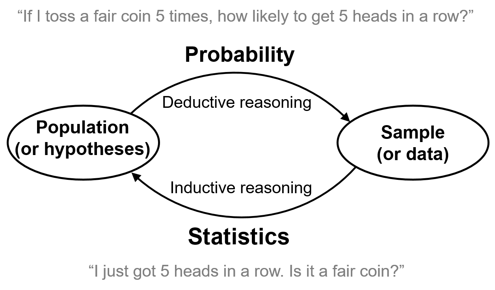
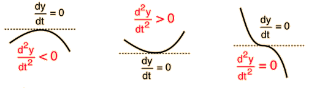

| Toss | 1 | 2 | 3 | 4 | 5 | 6 | 7 | 8 | 9 | 10 |
|---|---|---|---|---|---|---|---|---|---|---|
| Result | H | T | T | H | T | H | H | H | H | H |
A natural thought: select the parameters under which the observed data is most likely to arise.
That is, select the parameters that maximize the probability (likelihood) of obtaining the data at hand.
With a vector of \(n\) observations \[ X=(X_1, X_2, \cdots, X_n) \]
\(X\) can be described by
whose form depends on an unknown parameter \(\theta\).
\[ \text{With $n$ observations:}\;\;x=(x_1, x_2, \cdots, x_n) \]
The likelihood function:
\[ \begin{aligned} \text{Discrete case:}&\;\;\;\;\mathcal{L}(\theta \mid x)=p_X(x_1, x_2, \cdots, x_n; \theta) \\ \text{Continuous case:}&\;\;\;\;\mathcal{L}(\theta \mid x)=f_X(x_1, x_2, \cdots, x_n; \theta) \\ \end{aligned} \]
Important distinction:
A maximum likelihood estimate (MLE) is a value of the parameter \(\theta\) that maximizes the likelihood function:
\[ \begin{aligned} \text{Discrete case:}&\;\;\;\;\hat{\theta}=\underset{\theta}{\operatorname{\color{blue}{arg max}}}\; p_X(x_1, x_2, \cdots, x_n; \theta) \\ \\ \text{Continuous case:}&\;\;\;\;\hat{\theta}=\underset{\theta}{\operatorname{\color{blue}{arg max}}}\; f_X(x_1, x_2, \cdots, x_n; \theta) \\ \end{aligned} \]
In maximizing the likelihood, we are essentially asking:
What is the value of \(\theta\) under which the data we received are most likely to arise?
| Toss | 1 | 2 | 3 | 4 | 5 | 6 | 7 | 8 | 9 | 10 |
|---|---|---|---|---|---|---|---|---|---|---|
| Result | H | T | T | H | T | H | H | H | H | H |
| \(x_i\) | 1 | 0 | 0 | 1 | 0 | 1 | 1 | 1 | 1 | 1 |
\[ X_i \sim \text{Bernoulli}(\theta) \]
The likelihood function
\[ \begin{aligned} &p_X(x_1, x_2, \cdots, x_n; \theta) \\ = \;&\text{P}(X_1=1, X_2=0, \cdots, X_{10}=1; \theta) \\ = \;&\text{P}(X_1=1; \theta) \cdot \text{P}(X_2=0; \theta) \cdots \text{P}(X_{10}=1; \theta) \\ = \;&\theta^7 (1-\theta)^3 \\ \end{aligned} \]
The likelihood function
\[ p_X(x_1, x_2, \cdots, x_n; \theta) = \color{blue}{\theta^7 (1-\theta)^3} \]
Find the \(\theta\) that maximize the likelihood function.
\[ \hat{\theta}=\underset{\theta}{\operatorname{arg max}} \big(\color{blue}{\theta^7 (1-\theta)^3} \big) \]
\[ \small { \begin{aligned} \theta=0.1 \;\;\rightarrow\;\; p_X=0.1^7 \cdot 0.9^3&=0.0000000729 \\ \theta=0.2 \;\;\rightarrow\;\; p_X=0.2^7 \cdot 0.8^3&\approx0.00000655 \\ \theta=0.3 \;\;\rightarrow\;\; p_X=0.3^7 \cdot 0.7^3&\approx0.000075 \\ \theta=0.4 \;\;\rightarrow\;\; p_X=0.4^7 \cdot 0.6^3&\approx0.000354 \\ \theta=0.5 \;\;\rightarrow\;\; p_X=0.5^7 \cdot 0.5^3&\approx0.000977 \\ \theta=0.6 \;\;\rightarrow\;\; p_X=0.6^7 \cdot 0.4^3&\approx0.00179 \\ \theta=0.7 \;\;\rightarrow\;\; p_X=0.7^7 \cdot 0.3^3&\approx \color{red}{0.00222} \\ \theta=0.8 \;\;\rightarrow\;\; p_X=0.8^7 \cdot 0.2^3&\approx0.00168 \\ \theta=0.9 \;\;\rightarrow\;\; p_X=0.9^7 \cdot 0.1^3&\approx0.00048 \\ \end{aligned} } \]
A likelihood function is often in a multiplication form.
\[ \small{ \hat{\theta}=\underset{\theta}{\operatorname{arg max}} \big(\color{blue}{\theta^7 (1-\theta)^3} \big) } \]
It is often more convenient to maximize its logarithm, called the log-likelihood function.
\[ \small{ \ln\big(\theta^7(1-\theta)^3\big)=\ln(\theta^7)+\ln(1-\theta)^3 = 7\ln\theta +3\ln(1-\theta) } \]
Get the derivative of this function w.r.t. \(\theta\). Set it to zero.
\[ \small{ 7\frac{1}{\theta}+3\frac{-1}{1-\theta}=0 \; \rightarrow \;\hat{\theta}=\frac{7}{10} } \]
The second derivative shows whether a point with zero first derivative is a max, a min, or an inflection point.

Lastly, we check whether its second derivative is negative.
\[ \small{ \begin{aligned} \text{First derivative:}&\;\;\;\;\frac{7}{\theta}-\frac{3}{1-\theta} \\ \text{Second derivative:}&\;\;\;\;-\frac{7}{\theta^2}-\frac{3}{(1-\theta)^2} < 0 \end{aligned} } \]
| Toss | 1 | 2 | 3 | 4 | 5 | 6 | 7 | 8 | 9 | 10 |
|---|---|---|---|---|---|---|---|---|---|---|
| Result | H | T | T | H | T | H | H | H | H | H |
| \(x_i\) | 1 | 0 | 0 | 1 | 0 | 1 | 1 | 1 | 1 | 1 |
An alternative approach:
We can also consider the above result as a single data point of \(y=7\), where \(Y \sim \text{bin}(10, \theta)\).
The likelihood function
\[ \small{ p_Y(y; \theta)=\text{P}(Y=y; \theta)={10 \choose 7} \color{blue}{\theta^7(1-\theta)^3} } \]
Note it is the same maximization problem as before.
Step 1. Obtain the likelihood function.
\[ \begin{aligned} \text{Discrete case:}&\;\;\;\;\mathcal{L}(\theta \mid x)=p_X(x_1, x_2, \cdots, x_n; \theta) \\ \text{Continuous case:}&\;\;\;\;\mathcal{L}(\theta \mid x)=f_X(x_1, x_2, \cdots, x_n; \theta) \\ \end{aligned} \]
The following uses the discrete case as an example.
Assuming the observations are independent, we have
\[ \begin{aligned} p_X(x_1, x_2, \cdots, x_n; \theta) &= p_X(x_1; \theta)\cdot p_X(x_2; \theta) \cdots p_X(x_n; \theta) \\ &= \prod_{i=1}^n p_X(x_i; \theta) \\ \end{aligned} \]
Step 2. It is often more convenient to convert the likelihood function to the log-likelihood function.
\[ \begin{aligned} \ln \big(p_X(x_1, x_2, \cdots, x_n; \theta)\big) &= \ln \bigg(\prod_{i=1}^n p_X(x_i; \theta) \bigg) \\ \\ &= \sum_{i=1}^n \ln \big(p_X(x_i; \theta)\big) \\ \end{aligned} \]
Step 3. Maximization
A general case: If we got \(k\) heads out of \(n\) tosses, what is the MLE of the probability of heads?
\[ \small{ X_i \sim \text{Bernoulli}(\theta),\;\;\;\; x_1+x_2+\cdots+x_n=k } \]
\[ \small{ \begin{aligned} \ln \big(p_X(x_1, x_2, \cdots, x_n; \theta)\big)&=\ln \bigg(\prod_{i=1}^n p_X(x_i; \theta) \bigg) \\ \\ &=\ln \big(\theta^k(1-\theta)^{n-k} \big) \\ \\ &=k \ln\theta + (n-k)\ln(1-\theta) \\ \end{aligned} } \]
\[ \small{ \begin{aligned} &\text{Set its derivative to zero:}\;\;\;\; \frac{k}{\theta}-\frac{n-k}{1-\theta}=0 \\ \\ &\text{Solve for $\theta$:}\;\;\;\;\hat{\theta}=\frac{k}{n}=\frac{x_1+x_2+\cdots+x_n}{n}=\bar{x}\\ \end{aligned} } \]
If we use RVs \(X_1, X_2, \cdots, X_n\) to represent the outcomes of \(n\) independent coin tosses, the maximum likelihood estimator.
\[ \hat{\Theta}_n=\frac{X_1+X_2+\cdots+X_n}{n}=\bar{X} \]
Suppose \(X\) is a discrete RV with the following PMF:
\[ \small{ \begin{aligned} p_X(x) = \begin{cases} \theta/3, & \text{if $x=0$,}\\ 2\theta/3, & \text{if $x=1$,}\\ 1-\theta, & \text{if $x=2$,}\\ 0, & \text{otherwise.}\\ \end{cases} \;\text{where } 0 \leq \theta \leq 1. \end{aligned} } \]
To estimate the parameter \(\theta\), you collected 10 sample data:
\[[2, 0, 0, 1, 2, 0, 2, 0, 0, 1]\]
Assume the data are i.i.d. from this distribution.
What is the maximum likelihood estimate of \(\theta\)?
First, we can see that the PMF is valid as its values are always non-negative and add up to 1, for any \(0 \leq \theta \leq 1\).
\[ \theta/3 + 2\theta/3 + (1-\theta) = 1 \]
\[\text{Data:}\;\;[2, 0, 0, 1, 2, 0, 2, 0, 0, 1]\]
The likelihood function for obtaining the above data
\[ \begin{aligned} &p_X(x_1, x_2, \cdots, x_{10};\theta) \\ =\;&\text{P}(X_1=2, X_2=0, X_3=0,\cdots, X_9=0, X_{10}=1;\theta) \\\ =\;&\text{P}(X_1=2;\theta)\cdot\text{P}(X_2=0;\theta)\cdots \text{P}(X_{10}=1;\theta) \\ =\;&\bigg(\frac{\theta}{3}\bigg)^5 \cdot \bigg(\frac{2\theta}{3}\bigg)^2 \cdot \bigg(1-\theta\bigg)^3 \\ \end{aligned} \]
Note the exponents (5, 2, and 3) are from the counts of zeros, ones, and twos in the data.
The log-likelihood function
\[ \begin{aligned} &\ln \bigg(\bigg(\frac{\theta}{3}\bigg)^5 \bigg(\frac{2\theta}{3}\bigg)^2 \bigg(1-\theta\bigg)^3\bigg) \\ \\ = & 5\ln\bigg(\frac{\theta}{3}\bigg) + 2\ln\bigg(\frac{2\theta}{3}\bigg) + 3\ln(1-\theta) \\ \end{aligned} \]
Get the derivative of the log-likelihood function w.r.t. \(\theta\).
\[ \begin{aligned} &\frac{d}{d\theta}\bigg(5\ln\bigg(\frac{\theta}{3}\bigg) + 2\ln\bigg(\frac{2\theta}{3}\bigg) + 3\ln(1-\theta)\bigg) \\ \\ =\;&5\frac{3}{\theta}\frac{1}{3} + 2\frac{3}{2\theta}\frac{2}{3}+3\frac{1}{1-\theta}(-1) \\ \\ =\;&\frac{5}{\theta}+\frac{2}{\theta}-\frac{3}{1-\theta} =\;\frac{7}{\theta}-\frac{3}{1-\theta} \\ \end{aligned} \]
Set the derivative to zero. Solve for \(\theta\).
\[ \frac{7}{\theta}-\frac{3}{1-\theta} = 0 \]
\[ \hat{\theta}=0.7 \]
Lastly we check the second derivative of the log-likelihood function w.r.t. \(\theta\).
\[ \begin{aligned} \frac{d}{d\theta}\bigg(\frac{7}{\theta}-\frac{3}{1-\theta}\bigg) &= -\frac{7}{\theta^2}-(-1)\frac{3}{(1-\theta)^2}(-1) \\ \\ &=-\frac{7}{\theta^2}-\frac{3}{(1-\theta)^2} < 0 \end{aligned} \]
The second derivative is negative. Thus, \(\hat{\theta}\) is the value that maximizes the log-likelihood function.
In conclusion, the MLE of the parameter \(\theta\) is 0.7.